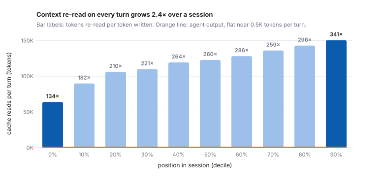
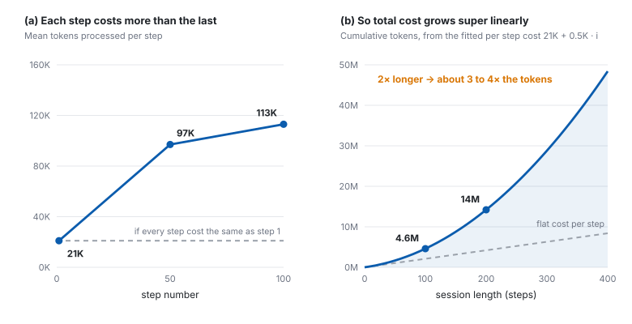
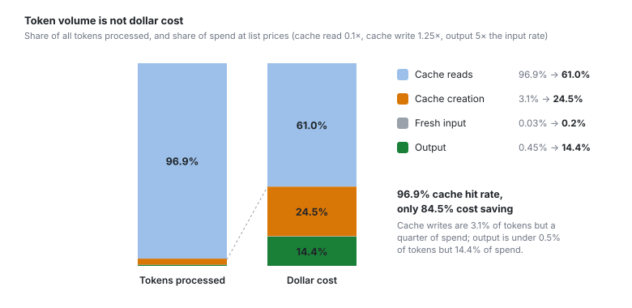
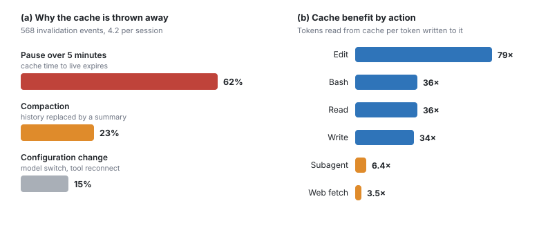
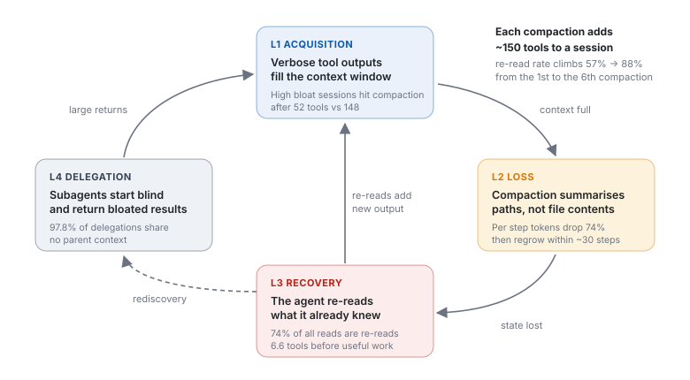
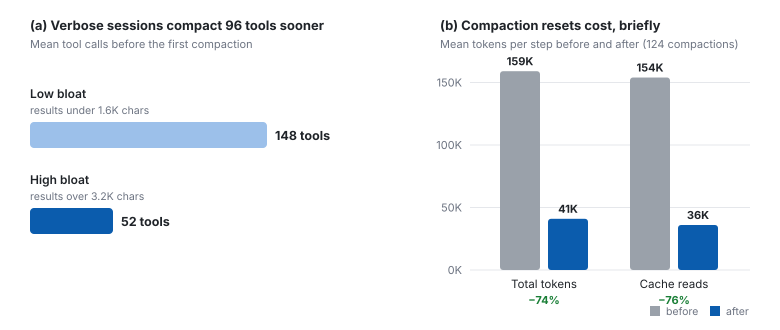
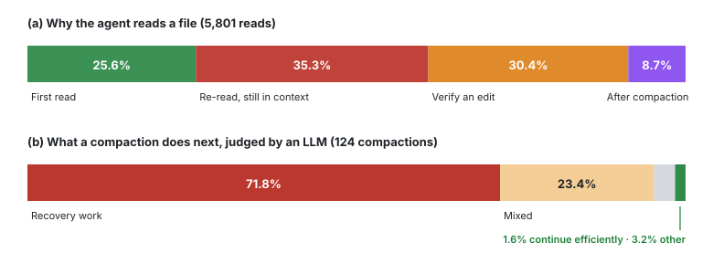
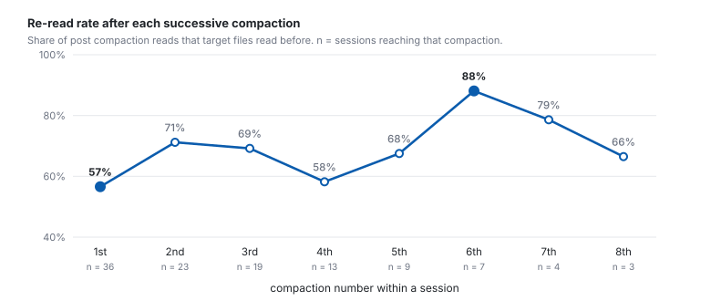
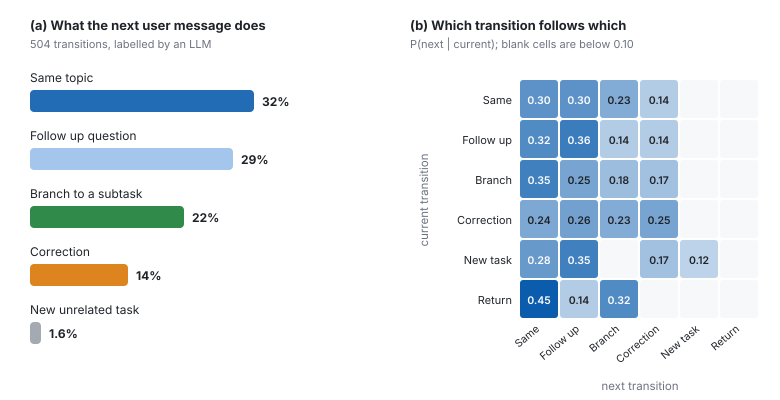
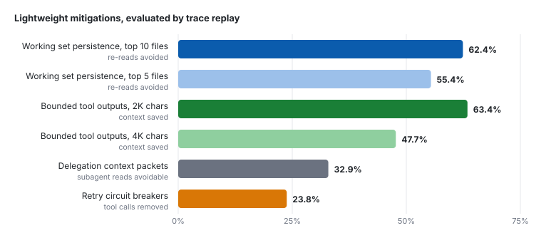

Where do the tokens go?
Context churn in real world LLM agent sessions
TL;DR
We studied real, interactive LLM agent sessions: 22,692 tool calls, 125 context compactions and 246 delegations to subagents. Almost none of the cost is thinking. 96.9% of all input tokens are the agent re-reading its own context, and the agent's reasoning is only 6.6% of what it writes.
The waste compounds. Verbose tool outputs fill the context, compaction throws away file contents, and the agent re-reads what it already knew, which fills the context again. We call this loop context churn. Only 26% of file reads bring in new information.
The same signatures appear in 318K autonomous trajectories, so churn is a property of tool using agents, not of one product. Cheap fixes help: in trace replay, keeping the working set across compaction avoids 62% of re-reads and capping tool outputs saves 63% of context.
Account
Where does the token budget actually go?
Per turn accounting over 4.7 billion input tokens
96.9%of input tokens are cache reads of prior context
Diagnose
How much reading is new information?
5,801 file reads, classified by cause
26%of reads are first reads; the rest are re-reads
Fix
What can be recovered without changing the agent?
Trace replay of four lightweight policies
62%of re-reads avoided by persisting the top 10 files
LLM agents now do sustained work in real developer environments: reading files, editing code and documents, running commands, reviewing pull requests and delegating subtasks to subagents. All of it competes for one finite resource, the context window. Every file read, test log, edit diff, compaction summary and subagent reply has to fit.
Recent work has started to measure agent token economics[1, 2, 3, 4], but always on benchmarks: short, single issue, autonomous runs in a single context window. Real use looks different. A developer works with an agent for hours or days, asks questions, corrects it, changes direction, hits the context limit and carries on. This post summarises the first study of where tokens go in that setting.
The data
Each session is an interactive conversation with a coding agent, not a benchmark run. Sessions range from 1 to 2,385 turns (median 67), and 27 exceed 500 tool calls. Most tool calls are Bash (44.4%), Read (25.5%) and Edit (23.6%). About 28% of sessions reach at least one compaction, where the system replaces the full history with a structured summary of about 11.7K characters. To test whether the findings generalise, we compare against 318,115 autonomous trajectories from SWE-Zero[5], which have no human in the loop, no compaction and no delegation.
Where the tokens go
Finding 1
The agent mostly pays to re-read itself
Across all sessions, input tokens total 4.71 billion. Of these, 96.9% are cache reads: prior context processed again on every turn. New observations entering the context for the first time are 3.1%, and fresh input from the system and the user is 0.03%. The agent's own output is 21.5 million tokens, and of that, 76.9% is tool call arguments, 16.5% is text for the user, and only 6.6% is reasoning.

Because every turn re-reads everything before it, the cost of a single step grows roughly linearly with its position: 21K tokens at step 1, 97K at step 50 and 113K at step 100. Cumulative cost is therefore super linear. A session twice as long costs about four times as much. This is an agent specific scaling law, distinct from scaling reasoning at test time[8]: it is driven by observations accumulating in context, not by deliberate thought.

Finding 2
A near perfect cache hit rate still leaves most of the cost
With 96.9% of input served from cache, one might expect cost to be negligible. It is not. Priced at list rates, where a cache read costs a tenth of fresh input, writing to the cache costs 1.25× and output costs 5×, the 96.9% hit rate saves only 84.5% of cost. Cache reads are still 61% of spend through sheer volume, and cache writes, only 3.1% of tokens, are a quarter of it.

What predicts cost is not the cache but the session. Session length explains 94% of the variance in cost (R2 = 0.94), while cache hit rate explains 24%. The most expensive tenth of sessions account for 56.8% of all spend, with the same average hit rate as everyone else.
Finding 3
Cache invalidation is the largest avoidable cost
Sometimes the whole cached prefix is discarded and rebuilt from scratch. We detect 568 such invalidations, 4.2 per session. Each one spikes cache creation to 41× a normal turn, and in total 30.8% of all cache creation tokens are spent rebuilding cache that already existed. The main cause is ordinary human behaviour: 62% of invalidations happen because the developer paused for longer than the five minute cache lifetime, to review code or think.

Not every action is equal. Edits append a few tokens and reuse the whole prefix, while subagent results and fetched web pages bring in large blocks of new content. Being cache friendly is not the same as being context friendly, though: reads reuse the cache well, yet they are the main reason the context fills.
Finding 4
Much of the activity is searching, not progress
Classifying the 10,065 Bash calls by purpose shows that 45.5% gather information: searching, listing files and reading files through the shell. Code execution is 22.1% and produces the largest outputs. State changing commands are only 8.7% of calls but fail most often, at 14.8% for git operations and 12.5% for package management, and these failures are where retry spirals concentrate. Read is a quarter of all calls but produces 67.8% of all observation characters, because each read averages about 4,400 characters, roughly a whole file.
| Bash purpose | Share of calls | Error rate |
|---|---|---|
| Information gathering: search, list, read | 45.5% | 0.5 to 4.4% |
| Execution: run code and scripts | 22.1% | 5.9% |
| State change: git | 2.9% | 14.8% |
| State change: packages | 3.2% | 12.5% |
| Process management | 2.1% | 12.6% |
| Infrastructure: cloud, HTTP, database | 5.7% | 6.6 to 8.6% |
Table 1. Bash calls by purpose (10,065 calls). Information gathering dominates; state changing commands fail most often.
| Tool | Share of calls | Share of context | Mean chars per call |
|---|---|---|---|
| Read | 25.5% | 67.8% | 4,433 |
| Bash | 44.4% | 25.0% | 910 |
| Subagent result | 1.1% | 3.1% | 4,692 |
| Edit | 23.6% | 3.0% | 202 |
Table 2. Where observation characters come from (36.5M characters in total).
Context churn
The central finding is that these effects do not act independently. They form a loop that feeds itself.

Finding 5
Verbose outputs bring compaction sooner
Sessions whose tool results average more than 3,200 characters reach their first compaction after a mean of 52 tool calls; sessions below 1,600 characters last 148. When compaction happens, the per step cost drops 74%, from 159K to 41K tokens, but the context regrows to its previous level within about 30 steps.

Finding 6
After compaction, the agent re-reads what it knew
Summaries preserve task intent, file paths and key decisions, but not file contents, exact edit state or user preferences. The agent needs the content, so it reads the files again. Of all file reads, only 25.6% are first reads; 35.3% re-read files still in context, 30.4% verify an edit that already succeeded, and 8.7% recover what compaction lost. An LLM judge reviewing all 124 analysable compactions found that 71.8% trigger recovery work as their main effect, and only 1.6% allow the agent to simply carry on. After compaction the agent uses a mean of 6.6 tools before its first productive action.

Finding 7
The loop gets worse each time around
In sessions with several compactions, the re-read rate climbs from 57% after the first to 88% after the sixth, because the working set grows while the summary budget does not. Each compaction adds about 150 tool calls to a session, and sessions in which four or more churn mechanisms are active average 500 tool calls, against 6 for sessions with none. Each additional active mechanism roughly doubles the tool count.

| Active mechanisms | Sessions | Mean tool calls |
|---|---|---|
| 0 | 7 | 6.3 |
| 1 | 17 | 11.0 |
| 2 | 14 | 59.1 |
| 3 | 15 | 170.2 |
| 4 | 26 | 500.2 |
| 5 | 9 | 324.9 |
Table 3. Mean tool calls by the number of churn mechanisms active in a session (redundant reads, compaction, delegation, bloat and spirals).
Finding 8
Delegation starts blind
Only 2.2% of delegations pass any of the parent's knowledge to the subagent, so subagents rediscover what the parent already knew. Results average 5,816 characters, and a quarter exceed 10,000. No delegation ever continued an existing subagent: each one started from scratch.
| Measure | Value |
|---|---|
| Delegations that pass any parent context | 2.2% |
| Mean tool calls per subagent | 37.3 |
| Subagent reads of files the parent already read | 32.9% |
| Mean result size | 5,816 chars |
| Results over 10,000 chars | 25.8% |
| Delegations that continue an existing subagent | 0 |
| Delegations in the first half of a session | 57% |
Table 4. Delegation to subagents (246 delegation events).
Humans in the loop
Real sessions are steered continuously. In interactive sessions, users sent one message every 5.2 tool calls on average. About 10.6% of messages are corrections, and each costs a mean of 4.8 tool calls before the agent makes its next productive edit. Corrections are spread evenly across a session and do not change after compaction, which suggests a constant gap between what the user means and what the agent understands. The agent asks good questions when it does ask, but it asks rarely and not more often when it is stuck; it retries instead.
| Measure | Value |
|---|---|
| User messages per session (mean) | 50 |
| Tool calls per user message | 5.2 |
| Messages that are corrections | 10.6% |
| Tool calls before the next edit after a correction | 4.8 |
| Tool calls before the first fix after an error report | 6.6 |
| Corrections recovered within 3 tools | 79% |
| Corrections only partly incorporated | 73% |
| Sessions that ever ask the user a question | 43% |
Table 5. How users steer sessions. Interruption types are LLM classified (123 interruptions); recovery is judged on 40 corrections.
Sessions are also tree shaped. Most new messages extend or branch the current task, and only 1.6% of transitions start an unrelated one. Task difficulty, rated by an LLM judge, predicts cost strongly: very hard sessions use about 190× more tokens than easy ones, both because they are longer and because each turn is more expensive. Scope, the number of files and systems involved, is the strongest single predictor (Spearman ρ = 0.83).

The transition structure shows how scope grows. After a branch, the next message most often continues the same line. After a return to an earlier topic, the session usually stays there. Corrections cluster: a quarter are followed directly by another correction, and 67 episodes contain two or more in a row, a sign that the agent has misunderstood the task rather than made a small slip.
Is this specific to one agent?
Finding 9
The same signatures appear in 318K autonomous runs
SWE-Zero trajectories come from a different framework, a different model and no human interaction, yet the behaviour matches closely.
| Metric | Interactive | SWE-Zero (318K) |
|---|---|---|
| Median steps | 67 | 67 |
| Files read per file edited | 4.2× | 5.6× |
| Sessions with re-reads | 99.6% | 99.6% |
| Mean re-reads per session | ≈ 9 | 9.0 |
| Mean observation size (chars) | 1,907 | 1,877 |
Table 6. Behavioural signatures of interactive sessions and autonomous SWE-Zero trajectories.
Because SWE-Zero runs never compact, the re-reads there cannot come from lost state. Agents re-read files even within a single context window, which points to churn as a structural property of how tool using agents navigate code, and to fixes that target how information enters and leaves the context.
What helps
Experiment
Four lightweight mitigations, by trace replay
We replayed the tool active sessions under four counterfactual policies, none of which needs changes to the agent's architecture. Working set persistence keeps the most read files across compaction. Bounded outputs cap every tool result. Delegation context packets pass the parent's file history to each subagent. Retry circuit breakers stop after three identical commands or five identical reads.

Timing matters too. When compaction finally triggers, 99.5% of the context was carried over from earlier turns, including topics the session has already left behind and will not return to. Simulating compaction at half the window instead of a full window would save 47% of cumulative input tokens.
Recent work shows that simple observation masking can match LLM summarisation for managing agent context[6], and that compression can be optimised for long horizon agents[7]. The results here point one step earlier. The largest opportunity is not better compression but less to compress: deciding what enters the context, what persists across a reset, what is handed to a subagent and what is dropped.
Citation
Please cite this post as
Paul Trust. “Where do the tokens go? Context churn in real world LLM agent sessions.” April 2026. https://paultrust26.github.io/paultrust/blog/context-churn.html
or in BibTeX
@misc{trust2026contextchurn,
title = {{Where do the tokens go? Context churn in real world LLM agent sessions}},
author = {Trust, Paul},
year = {2026},
month = apr,
howpublished = {\url{https://paultrust26.github.io/paultrust/blog/context-churn.html}},
note = {Blog post}
}References
- How Do AI Agents Spend Your Money? Analyzing and Predicting Token Consumption in Agentic Coding Tasks[PDF]Bai, L., Huang, Z., Wang, X., Sun, J., Mihalcea, R., Brynjolfsson, E., Pentland, A. and Pei, J., 2026. arXiv preprint arXiv:2604.22750.
- Tokenomics: Quantifying Where Tokens Are Used in Agentic Software Engineering[PDF]Salim, M., Latendresse, J., Khatoonabadi, S. and Shihab, E., 2026. arXiv preprint arXiv:2601.14470.
- SWE-Effi: Re-Evaluating Software AI Agent System Effectiveness Under Resource Constraints[PDF]Fan, Z., Vasilevski, K., Lin, D., Chen, B., Chen, Y., Zhong, Z., Zhang, J.M., He, P. and Hassan, A.E., 2025. arXiv preprint arXiv:2509.09853.
- The Price Reversal Phenomenon: When Cheaper Reasoning Models Cost More[PDF]Chen, L., Zhang, C., He, Y., Stoica, I., Zaharia, M. and Zou, J., 2026. arXiv preprint arXiv:2603.23971.
- SWE-Zero: Execution-free Fine-tuning for Software Engineering AgentsNVIDIA, 2026. Hugging Face dataset of 318K OpenHands trajectories on 118K GitHub issues.
- The Complexity Trap: Simple Observation Masking Is as Efficient as LLM Summarization for Agent Context Management[PDF]Lindenbauer, T., Slinko, I., Felder, L., Bogomolov, E. and Zharov, Y., 2025. Deep Learning for Code Workshop (DL4C) at NeurIPS.
- ACON: Optimizing Context Compression for Long-horizon LLM Agents[PDF]Kang, M., Chen, W.N., Han, D., Inan, H.A., Wutschitz, L., Chen, Y., Sim, R. and Rajmohan, S., 2026. International Conference on Machine Learning (ICML).
- Scaling LLM Test-Time Compute Optimally can be More Effective than Scaling Model Parameters[PDF]Snell, C., Lee, J., Xu, K. and Kumar, A., 2024. arXiv preprint arXiv:2408.03314.